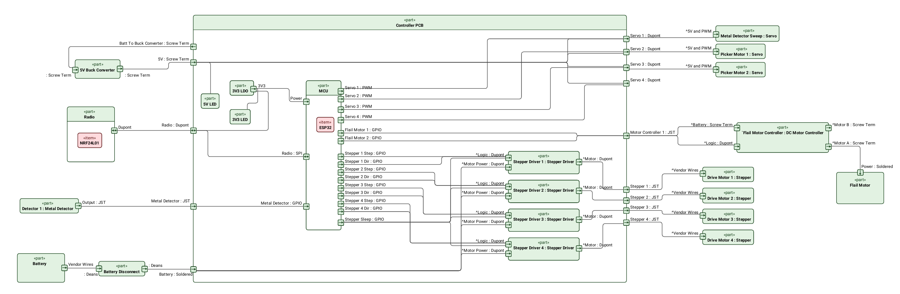
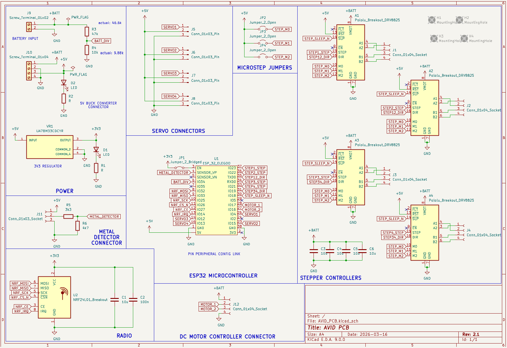
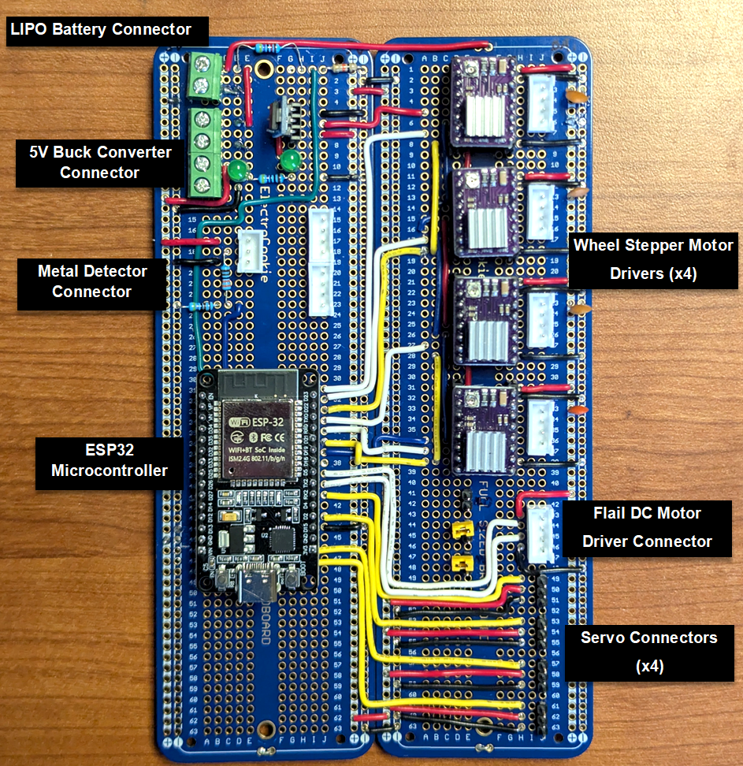
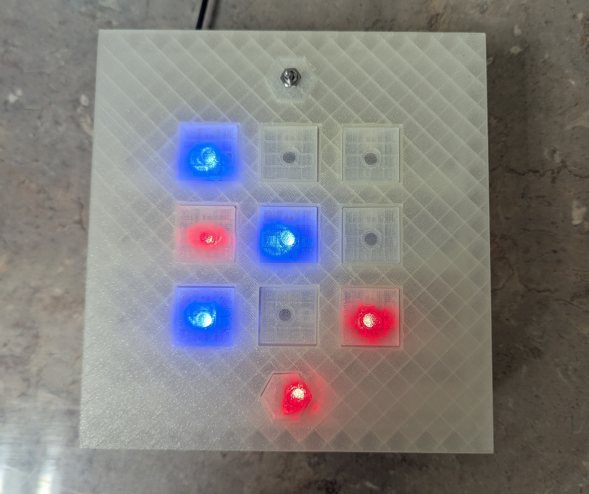

This website was made from scratch and the source files are available On Github.
My Project Portfolio
LetSpace Avionics Team Lead
As the avionics team lead for LeTourneau University's space program (LetSpace), I am following in the footsteps of our previous lead to
continue avionics support for high-power rockets. This involves maintenance and updates of our launch vehicle hardware and software,
integrating new design elements such as cameras, and participating in 2 meetings per week to discuss the progress of the project.
We are working towards building a rocket that will travel past the Karman line at 100km, and have built several 1- and 2-stage rockets
as building blocks towards our goal.
ARIES: Advanced Remote Ignition and Evaluation System
ARIES provides LetSpace's propulsion team with test capability for custom rocket motors, including remote ignition and force data
collection. During this project I spent over 80 hours on PCB design and construction, CAD design, and software
development, and the result was a rugged, all-in-one system for testing rocket motors that is currently in use by our propulsion team.
Safe remote ignition of rocket motors at up to 1100m, with two ignition channels for testing multiple igniters at once
6-step ignition procedure for safety: both devices must be turned on and armed, and the ignition button must be pressed 2 separate times
Integrated load cell data collection with data saved to a CSV file on an SD card, with the ability to add sensors in the future as necessary
Data readout on remote for continuity check and sensor data
Loud warning buzzer and strobe lights on test stand
The complete ARIES System
AVID: Autonomous Vehicular Integrated Demining
This was a semester-long project for my Engineering Project Management class. Our task was to build a device that could safely
remove landmines from war-torn areas. I was the electrical lead, and designed and built the entire electrical system for our vehicle,
with a very limited budget. I outlined the electrical hardware using SysML v2, which specified devices and connections:

AVID Electrical System Block Diagram
I then designed the main controller board in KiCad, and built it by hand using solderable breadboards, as getting a custom PCB
manufactured was deemed too expensive and risky for our project:

AVID PCB Schematic

AVID PCB as Built
Electric Circuits Supplemental Instruction
As the Supplemental Instruction (SI) leader for ENGR2053 Intro to Circuits, I led weekly review sessions that included practice problems
and lecture topics. Over the course of the semester, I created over 80 pages of study notes and practice problems using LaTeX,
which are available on Github.
STM32 Development Board (failed prototype)
This was an unsuccessful prototype for a development board using the STM32F405 microcontroller. The project took about 50 hours
in PCB design, assembly, and testing. More details are available here.
Autonomous Maze Navigating Robot
This was the final project for my Microcontrollers class spring 2026. It was supposed to be a team project, but I decided to work by
myself instead. The project involved hardware design to safely connect sensors, motors, and power to a microcontroller
development board, control algorithm design, and software design in low-level C. The full project report is available.
FPGA Tic Tac Toe (team lead)
I led a team of four to design, build, and program a tic-tac-toe game using a Digilent Basys 3 FPGA and VHDL. I spent over 25 hours
singlehandedly writing the code, and facilitated meetings and deadlines. The code is available on the Github repo.

Completed Tic Tac Toe Game Box
Sedulous Injection Molding Machine
This was a continuation of a project a previous student had started. I worked on a team of three to fix the mechanical design of the
injection assembly, and also made software updates, including a block diagram of the machine's operation in SysML v2 and making readability
fixes to the Arduino C code.